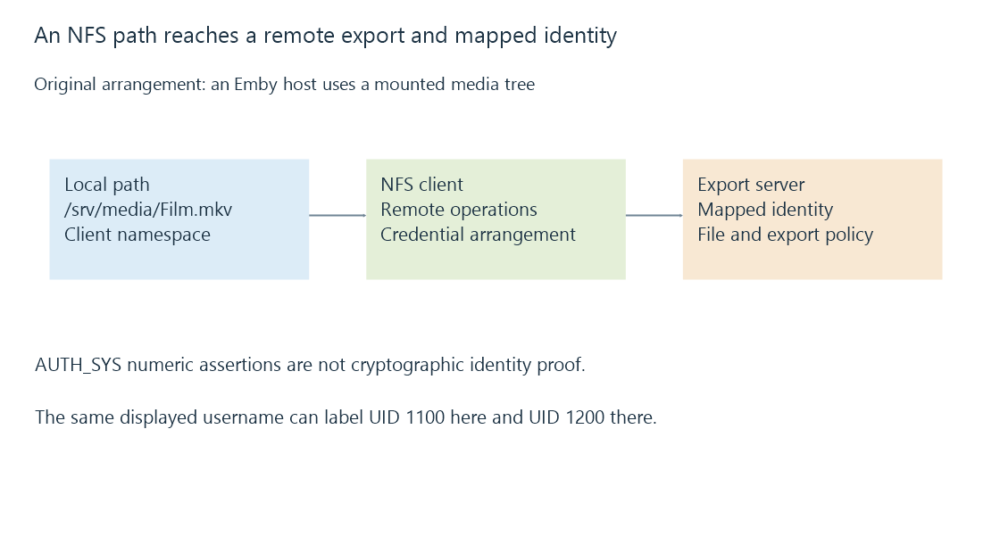

NFS file shares and server-side identity mapping
NFS exposes a remote file tree through a client mount, with protocol state and identity mapping affecting access and recovery.
NFS, the Network File System protocol, lets a client use files provided by another server. On a Linux Emby host, an exported NAS tree might be mounted at /srv/media. The application opens an apparently local pathname while the NFS client performs operations on the remote server.
That appearance is convenient, but it does not remove the network, remote server or access mapping from the read.
A local path reaches a remote file

The mount defines how the remote tree appears in the client's namespace. NFS uses protocol-level file handles and operations; the local path is not simply sent as a Windows UNC string for every action.
NFS versions have different arrangements. NFSv4 integrates stateful open and locking behavior, and version 4.1 specifies sessions and recovery mechanisms. Older NFS versions use other protocol structures. Evidence from one version should retain that scope.
Usernames are not a universal cross-machine identity
With RPC AUTH_SYS, a client supplies a numeric user ID, group ID and supplementary-group information in its authentication data. Those values are not cryptographic proof that an untrusted client is entitled to claim them. The security arrangement and trusted-client boundary matter.
NFSv4 also represents owner and group attributes through protocol names such as name@domain. Mapping those names to local identities is another step. Stronger arrangements can use RPCSEC_GSS, including Kerberos-based mechanisms, instead of treating a numeric assertion as sufficient identity evidence.
An original AUTH_SYS-style example illustrates a mapping problem:
Client label "emby": UID 1100
Remote file owner: UID 1200
Client and server both display a user named "emby"
Numeric owner identities in this example: different
Matching displayed usernames do not make those numeric IDs equal. Conversely, different names on two machines can represent the same number in a simple numeric-ID arrangement.
Export policy and file permissions both participate
| Layer | Example question |
|---|---|
| Export policy | Is this client allowed to use this export in the requested mode? |
| Authentication arrangement | Which credential or asserted identity is accepted? |
| Identity mapping | Which local server identity does it become? |
| File access | Can that identity traverse directories and read the file? |
An export can be read-only. A server can also map a client's privileged identity to an anonymous one, commonly called root squashing in Unix NFS administration. This is an export policy, not a rule that every protocol operation from every UID zero must have one universal result.
Running a client application as root therefore does not establish that the remote file server grants it privileged file access. Check the accepted and mapped identity instead.
A present mount can still wait for the server
The mount entry can remain visible while the remote server is unreachable. File operations can retry or fail according to the client implementation and mount policy. A directory appearing in the mount table is not proof that enumeration completes.
That distinction matters for Emby scans and playback. A timed-out remote operation is not an observed empty export. After recovery, establish that the intended mounted tree is readable under the server process's identity, then reconcile the library's current state. Unavailable mounts separates these failure states in more detail.
See Also
- Linux user and group IDs in storage access
- Mount points and the file system behind a path
- Network-attached storage: files served by another computer